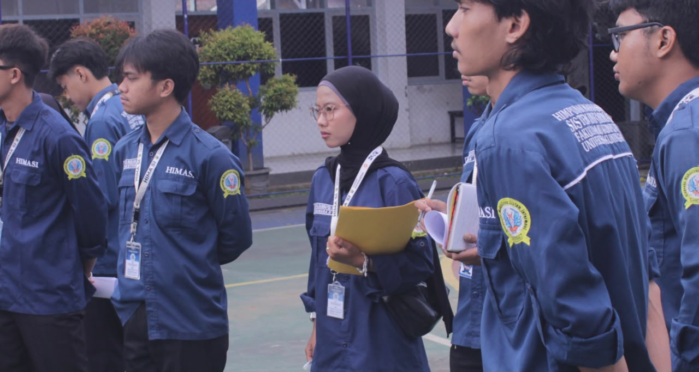
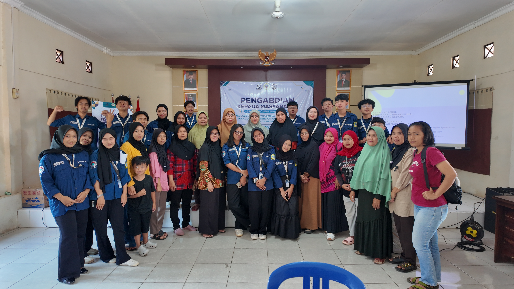
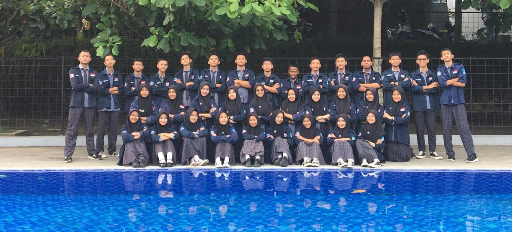

Pengalaman Organisasi & Kepemimpinan
Bendahara Umum 2
Himpunan Mahasiswa Sistem Informasi (HIMASI) Universitas Kuningan
Mengelola stabilitas finansial organisasi, menyusun dan merekapitulasi Rencana Anggaran Biaya (RAB) program kerja, serta merumuskan laporan pertanggungjawaban keuangan yang transparan dan akuntabel.

Sekretaris Umum
Forum OSIS Kuningan (FOK)
Bertanggung jawab penuh atas tata kelola administrasi kesekretariatan tingkat regional, mengkoordinasikan surat-menyurat resmi, notulensi rapat strategis, serta mendokumentasikan arsip program kerja lintas sekolah.

Hubungan Masyarakat (Humas)
Pengabdian Kepada Masyarakat (PKM)
Menjadi garda terdepan dalam membangun komunikasi efektif antara panitia pelaksana dengan instansi eksternal/masyarakat lokal, serta mengoordinasikan publikasi kegiatan agar berjalan lancar.

Hubungan Masyarakat (Humas)
OSIS Sekolah
Menginisiasi strategi komunikasi internal dan eksternal sekolah, menjembatani aspirasi siswa kepada pihak birokrasi sekolah, serta aktif mengelola relasi publik dalam setiap event besar sekolah.

Green Ambassador
Green Youth Movement Indonesia
Aktif mengkampanyekan aksi pelestarian lingkungan hidup dan memimpin gerakan aksi sosial berbasis edukasi pemuda untuk pembangunan berkelanjutan.